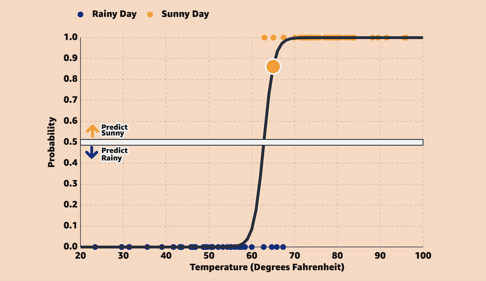
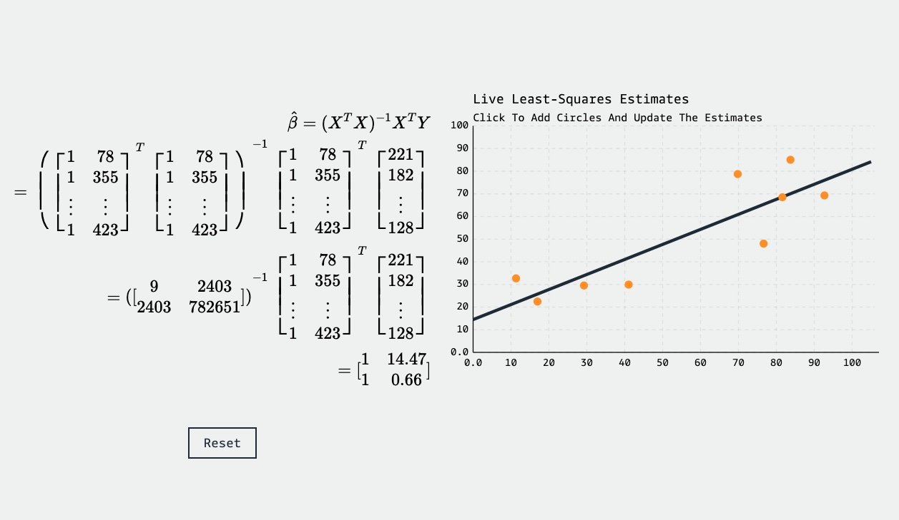
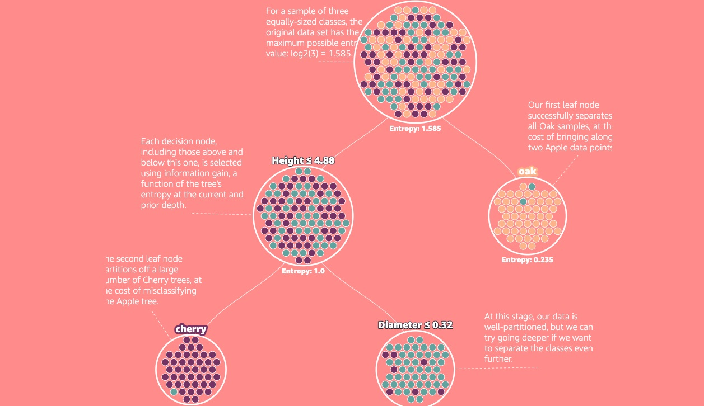
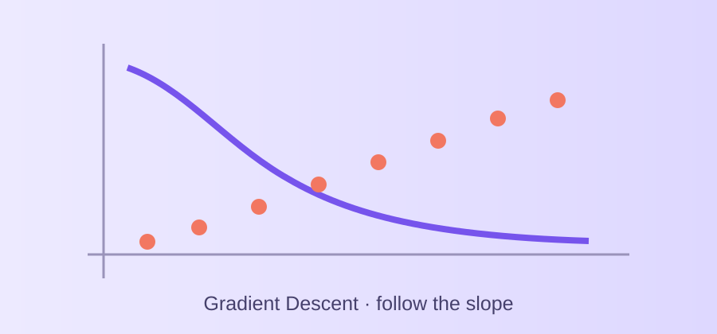
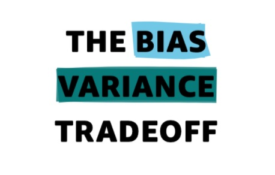

Random Forest
Explore bagging, feature selection, and majority voting, then practice with code.
Open lesson
Gradient Descent
Derive the updates, adjust the learning rate, and train a line step by step.
Open lesson
The Bias Variance Tradeoff
Explore model complexity, underfitting, overfitting, and the bias–variance decomposition.
Open lesson
Train, Test, And Validation Sets
Interactively split data and see how training, validation, and test sets guide model selection.
Open lessonCV
Cross-Validation
Estimate model performance across multiple data splits.